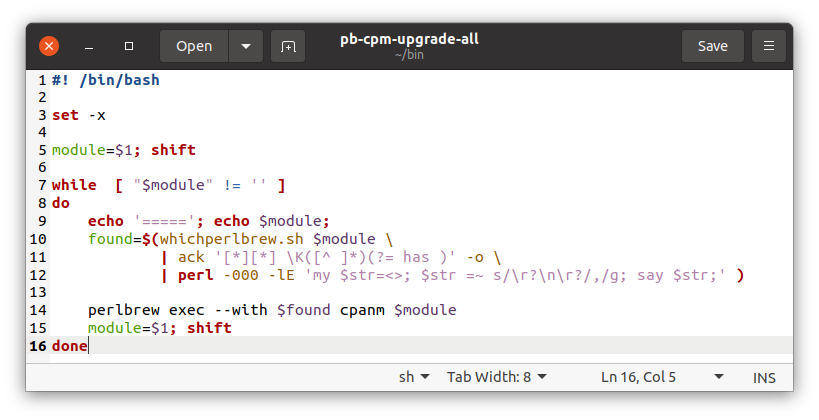

Recent Virtual Era History 2020-present 
2020-present
2020-present
Boston Perl Mongers history is divided into four parts.
(Note. This file is in chronological order, most recent at the bottom. The first two files are recent on top, or reversed order. All start with a table of contents by year.)
For the last meeting at MIT, see 2020 in MIT Pt ii
With the onset of COVID-19 Plague (technically Pandemic), we skipped March thru summer and went pure-virtual in fall of 2020.
Out of an abundance of caution and not having a speaker anyway, I’m canceling the meeting this month.
I wouldn’t be surprised if April has to be held as a Google Hangout or IRC meeting or something, as MIT may be a closed campus by then.
(And then MIT canceled all non-essential gatherings for the duration.)
We held no virtual meetings during the hard months, and then we often skip summer, so by fall, we could see what Natick FOSS and BLU were doing for virtual meetings.
Boston.PM will try a virtual meeting for September 8th (aka March 192nd ).
Topic: What did you do on your summer vacation? WFH & staycation (with Perl¹)?
Set::Tiny
Email::Stuffer and Text::CXV_XS notesWhere: JITSI
¹ or other compatible, interesting FLOSS too
NOTE – This is as early as 2nd Tuesday can fall and is the day after the long Labor Day Weekend, so it will feel very Monday and not very Tuesday, let alone 2nd Tuesday !
We will use the Jitsi Meet service.
(If you need to hear my rant about why Zoom’s “fixes” are inadequate, ask me off-list.)
Jitsi is a Free/Libre OSS project sponsored by 8x8 (an Atlassian spin-off). It is the freemium base for their added-value corporate meeting & VOIP platform. As FLOSS, it can be self-hosted; they provide a free demo server. We will currently be using the free demo server, but may migrate to a hosted server (where we can set defaults, privileges).
Natick FOSS group has a 4-page Jitsi Help .pdf file, and you can practice beforehand. (Natick meet 1st Thursdays, online, early afternoon) Update to file ^ : Firefox latest versions 78+ support multicast, so are safer than before. Chrome/Chromium/FF78+ all plausible now.
One can use plain web mode, but if you can install the browser plug-in if you like. There are also iOS (iPhone/iPad) and Android apps which work well.
(I will replace this line with the link to the meeting room later)
JITSI scales fine to more people in face-sharing Brady-Bunch / Hollywood Squares mode than you can easily see at once (30ish) and if folks turn off their cameras (same as mikes) when just listening/talking, i.e. when not commenting/presenting, it scales much higher.
(If we later get more folks than will comfortably fit in Jitsi, we can set up a stream to YouTubeLive or some other platform … or upgrade to a proper panelist platform feeding a stream, but the “seminar” quality of Jitsi is fine for our level of anarchy.)
I will routinely mute those not presenting so you’ll usually need to unmute to comment. Hint: Space-bar is push to talk, M is mute/unmute (on phone/tablet it’s the skewmorphic microphone, avoid the handset hangup button!). Shortcuts
Featuring Jerrad Pierce on IO::Pager
News: CPAN announces they’re sunsetting rt.cpan.org since diminishing usage; better support for migrating RT queue to GH is provided!
Suggested topics:
perl.com got hijacked. It’s gotten (mostly) un-hijacked.
brian d foy official
commentary;brian d foy – “Looking forward to Perl 7”, for Oslo Perl Mongers, Streamed 5 days ago https://www.youtube.com/watch?v=TiGxe3wYhD8
FYI, Perl 5.34.0 is releasing this spring; the new Steering Council is (still) (re)considering the proposal for Perl 7.
Syntax::Keyword::Try)isa to core, and chained comparisons
:if ( $x < $y <= $z )... )Paul Evans (“LeoNerd”, PEVANS) - Writing a Perl Core Feature - Part 1 & Part 2.
Summary: “Did you know that you could increase the readability and reliability of your Perl code with one feature? I’m talking about subroutine signatures: the ability to declare what arguments, and in some cases what types of arguments, your functions and methods take”
Based on the blog post at phoenixtrap

Summary: In this presentation, Mojolicious Core Team member Joel Berger will discuss some of the features of the recent Mojolicious 9.0 release and how they can improve your web (and async) applications.
Joel Berger is a Mojolicious Core Team member. He has a Ph.D. in Instrumentation Physics from the University of Illinois at Chicago and works at ServerCentral Turing Group. He lives in Chicago with his wife and 2 year old son.
---------- Forwarded message ---------
From: Joel Berger
Date: Wed, Apr 14, 2021 at 2:52 PM
Subject: Re: Tuesday - Tech meeting - Mojo 9 point OH!
BTW in looking to open a tracking ticket to
construct a guide for Mojo::DOM it seems we already have
one! <https://github.com/mojolicious/mojo/issues/1110> If anyone is
looking for a good way to contribute to Mojo (or just to open source)
without coding that would be a great way to do it!(My own comment is that an easily taught/comprehended Async framework is something i’ve been looking for since reading Dijkstra, Hoare, and ADA 35+ years ago. Rendezvous wasn’t it. – Bill)
Our first Joint Virtual Meeting
Boston.PM is invited to join Charlotte PM’s virtual meeting this Wednesday night, April 28th, 6PM EDT.
Command Line Adventures in Perl - 2021 Edition
Command line interfaces are an important part of managing many modern applications, and in 2021, there are no shortage of options for building them in Perl. In this talk, Jason will summarize many of the current options available, with an overview of the pros and cons of each. From there, he will explore how to construct a complex command line interface using CLI::Osprey, based on his recent experiences rebuilding the Dancer2 CLI.
Jason Crome is a longtime veteran of Perl and its community, is the TPF Grants Committee Secretary, and a member of the Dancer Core Team. He’s currently a contractor at Bank of America building and maintaining payment processing systems with Perl and C++.
Once again, Boston PM will join forces with Charlotte PM for a virtual meeting.
3 Not-So-Wise Men: Recent Misadventures …in which Brian Wisti, Gizmo Mathboy, and Yanick recount their recent (mis-)adventures with Perl, Markdown, JavaScript, and more to build blogs, games, Twitter posts, and other tools that are part of their everyday lives.
You’ll laugh, you’ll cry, you’ll question your life choices before all is said and done. There is something for everyone here, and it will be truly fun and entertaining
Wed, May 26, 2021, 6:00 PM EDT
Boston.pm and Charlotte.PM invited to BLU.org’s virtual meeting
Description: Jon “maddog” Hall discusses what customers really look for Details at http://blu.org/cgi-bin/calendar/2021-jun Organizer: Boston Linux + UNIX
(If you don’t recognize the name … Jon is a pundit and sometimes board member on things Linux and FLOSS; he was the manager at DEC who was the first to give Linus some hardware for porting Linux. We can thank him that it’s portable !)
Boston.PM is invited to again join Charlotte PM’s virtual meeting
Rob “CmdrTaco” Malda talks Slashdot, Perl, moderation, and more!
Hosted by Jason C. & Charlotte Perl Mongers
Join us on June 30th for a special event featuring Rob “CmdrTaco” Malda, founder of Slashdot, as he talks about the quirkiness of Perl that led them to build Slashcode using our favorite language, the challenges of scaling Slashdot in the early days, and how they built up a system to deal with bad actors. We will leave time for Q&A at the end, but feel free to send your questions in advance of the talk.
Rob Malda, aka CmdrTaco, founded Slashdot in his dorm room at Hope College in the late 1990s, and with that, broke new ground in news aggregation and social content moderation. He’s also the host of Geeks in Space, and a a maker of wooden pens.
Thanks to Knowmad (https://knowmad.com) for sponsoring our Zoom presence for this meeting, and to Boston.pm for cohosting the meeting with us. (And thanks to Charlotte PM for arranging this and inviting us!)
NOTE: Our speaker has asked that you leave your cameras on for this event. Also, he has a hard stop at 7:30, so please be prompt. There will be time for socializing after the talk. Look forward to seeing you all!
(Historical note: SlashDot was - still is! - an early Social Media website; it’s platform SlashCode was Perl. Boston.PM’s founder Chris “Pudge” Nandor was an early employee after it got investment.)
Noted other meetings Calendar
Wednesday, August 11, 2021 - Github Actions —
Purdue Perl Mongers (HackLafayette)
> Derrick will introduce us to GitHub Actions, which help you
automate your projects TW MU
MU
Wednesday, August 18, 2021 at 06:30 pm Boston Linux Unix (BLU.org) - Rocky Linux
Rocky Linux - Overview of the official release of Rocky Linux Rocky Linux is a community enterprise operating system designed to be 100% bug-for-bug compatible with Red Hat Enterprise Linux (RHEL), now that CentOS has shifted direction. The first release of Rocky Linux is now available. Our guests provide an overview of the new release, and discuss both installing a new Rocky server and upgrading/migrating an existing CentOS server to Rocky. http://blu.org/cgi-bin/calendar/2021-aug
Preliminary topic description - Everyone has a way for setting up a new workstation, account on a server, etc. Open Mic / Round-table discussion - what you do and why, so that others may learn.
No Boston.PM 2d Tuesday – this month 2d Tuesday and 3d Wednesday are adjacent.
Boston.PM is invited to join BLU.org on 3d Wednesday, as I’ll be giving the annual Crypto News & History briefing. BLU meeting notes
Why you should take a good look at Flutter for all platforms!
Flutter has come a long ways since its was first introduced a few years ago. Yes, even though Google is still in the driver’s seat for Flutter and Dart development, more and more of the contributions are coming from the community.
Google is highly committed to continuing to make Flutter the go-to SDK for user interfaces of all kinds. Of course it still does Mobile well (ios/android/fuchsia), but recently, major releases for Flutter on Web, Flutter on Desktop (linux, windows, macos), and Dart on every platform (including compiling go-like to a single binary with everything included) have continued to please the crowds.
Many large organizations have adopted Flutter, and some app-store apps have had literally millions of downloads.
I’ll be talking about the Past, Present, and Future of Flutter and Dart.
Topics covered:
Where - Online event hosted by Charlotte.PM
When - Wed, Aug 25, 2021, 6:00 PM ET
(This repeated for BLU in Feb 2022 which will have archived video and slides.)
Since Charlotte PM’s regular meeting night is Thanksgiving ±1, they took off this November.
Boston.pm and Charlotte.PM were both invited to BLU.org’s talk.
Wednesday, November 17, 2021 from 6:30 pm to 9:00 pm
Location - Online at Jitsi
Presenters - Neha Ojha , Project Technical Lead for the Ceph RADOS subsystem , Red Hat Software - nojha redhat com
A deep dive into Ceph (which is a distributed storage FLOSS project)
Abstract
What is Ceph? How is it different?
Neha discusses basic Ceph architecture, including details about RADOS, RGW, RBD, and CephFS. She also discusses Ceph’s management plane and details about the Ceph community and ecosystem.
invited to BLU.org again, periodic hardware build update
BLU notes “Budget Build Redux: Building a Box on a Budget with the AMD Ryzen 5600Gl”
“Shankar Viswanathan gives a technical overview of the newly released AMD Ryzen 4 series CPU; Kurt reviews the earlier Budget Build system discussed previously at the August 2020 BLU meeting, based on AMD’s Ryzen 3 CPU; and Brian DeLacey discusses his newest Budget Build system, based on the new AMD Ryzen 4 CPU.”
(This is the boilerplate as used fall 2020 - spring 2022. Current boilerplate is below announced schedule on homepage.)
Meetings hosted by Boston.PM are in meet.Jit.si and on 2d Tuesday.
Meetings hosted by Charlotte.PM are in Zoom and on Last Wednesdays.
Meetings hosted by Boston Linux Unix (http://blu.org) are in Jitsi and on 3d Wednesday.
(If you need to hear my rant about why Zoom’s “fixes” are inadequate, ask me off-list.) Jitsi is a Free/Libre OSS project sponsored by 8x8 (an Atlassian spin-off). It is the freemium base for their added-value corporate meeting & VOIP platform. As FLOSS, it can be self-hosted; they provide a free demo server. We will currently be using the free demo server, but may migrate to a hosted server (where we can set defaults, privileges). Natick FOSS group has a 4-page Jitsi Help .pdf file, and you can practice beforehand. (They meet 1st Thursdays, online, early afternoon.) Update to file ^ : Firefox latest versions 78+ support multicast, so are safer than before. Chrome/Chromium/FF78+ all plausible now.
One can use plain web mode, but you can install the browser plug-in if you like (recommended if sharing slides or terminal). There are also iOS (iPhone/iPad) and Android apps which work well.
JITSI keyboard shortcuts - https://jitsi.github.io/handbook/docs/user-guide/keyboard-shortcuts
JITSI scales fine to more people in face-sharing Brady-Bunch / Hollywood Squares mode than you can easily see at once (30ish) and if folks turn off their cameras when just listening/talking, i.e. when not commenting/presenting, it scales much higher. (If we later get more folks than will comfortably fit in Jitsi, we can set up a stream to YouTubeLive or some other platform … or upgrade to a proper panelist platform feeding a stream, but the “seminar” quality of Jitsi is fine for our level of anarchy.)
I will routinely mute those not presenting so you’ll usually need to unmute to comment. Hint: Space-bar is push to talk, M is mute/unmute (on phone/tablet it’s the skeuomorphic microphone, avoid the handset hangup button!).
As now seen on Perl Weekly
newsletter Perl weekly  and their Events Calendar - which
you can import via the live iCal calendar – at
least in months that i plan ahead (not this month).
and their Events Calendar - which
you can import via the live iCal calendar – at
least in months that i plan ahead (not this month).
Using a variation Dallas.pm’s “run this Perl command to get the URL” security indirection this month. (Designing it to work in any TZ 364 days of the year is tricky …) Run this command on day of a Boston.PM meeting to get the URL. (If you don’t have SSH to a VM on your iPhone, DM me or email me. As shown here, the result goes out in the email but not on the more modern Social Medias.)
perl -MDigest::SHA=sha1_hex -MPOSIX=strftime -le 'print strftime "%Y/%m/%d week %U", localtime; $date=strftime "Y%Y W%U", localtime; print $date; print "https://meet.jit.si/BostonPM-".sha1_hex("BostonPM".$date);'
2022/01/11 week 02
Y2022 W02
https://meet.jit.si/BostonPM-53d228e2ce1c71d05d0c3673096b1fcf874bcef2With special guest appearance of Boston.pm member emeritus Federico Lucifredi
In 2015, Mark Gardner developed a caching subclass of
LWP::UserAgent. This month, he is going to
talk about his journey in converting that to a plugin using
perlancar’s HTTP::Tiny::Plugin.
Mark Gardner is a professional Perl developer with over twenty-five years experience in various industries including pharmaceuticals, e-commerce, and web hosting. For the past year he’s been writing weekly at phoenixtrap.com about Perl-related topics, helping other developers engineer modern, disciplined applications with confidence.
“continuation of my ‘let me make sure I can entertain myself when I’m 90’ series.”
Ricky Morse
Ricky has previously shown us Perl scripts to make offline backups of various media he’d like to see again (without relying on the continued solvency of Archive.org). This will be another variation.
In her quest for more-readable code, D Ruth Holloway has been working on some DBIx::Class Dancer2 plugins for smoother, more semantically-friendly database searches. As a preview to her TPRC::Houston talk in June, come see these modules, and learn how to use them to make your own database queries faster, smarter, and easier to read.
(This was a Preview of Conference Talk re-titled “The Database Dance - DBIX and Dancer treachery to increase performance”, which has following abstract.)
Writing web applications with DBIx::Class and Dancer2 is super-easy. Learning how to make them efficient takes a little longer. Come see some of the things that Ruth has learned—and created—that make these apps faster and easier to maintain.
Writing inefficient applications is startlingly easy to do; some of my early Dancer2 work shows it! In this talk, we’ll discuss ways to structure queries and code to speed things up, and show some of the tools that are available for Dancer2 and DBIx::Class that make maintaining these systems just a bit easier.
Ruth has been writing Perl for 21 years, and attending Perl conferences for the last ten years, speaking at all but one of the in-person conferences. She is a big fan of DBIx::Class, Dancer2, and Agile programming without all the ceremonies. Ruth is a wife, writer, cook, autoharpist, and mommy to the cutest dog you will ever meet.
Bill Ricker, inspired by Ricky’s talk on archival
web scraping last month, revisits the Twitter::API.
One script is a daemon used to automatically retweet useful announcements posted to a monitored Twitter account. The other will archive a Twitter thread in text format (and can safely be re-run when the tread gets longer). It avoids depending on a 3rd party service, which use tracking, ads, and might disappear, to host the archived thread.
(My sample script is quite tuned to the thread I wished to archive, as it heuristically extracts proper nouns.)
(May appear on Charlotte PM YouTube eventually.)
https://en.wikipedia.org/wiki/D._Richard_Hipp
“SQLite is an SQL database engine that can be used in applications as a library for quick read-write operations. Unlike other database management systems, SQLite is not a client-server database designed to run in a data center. D. Richard Hipp is the architect and primary author of SQLite and the Fossil SCM.” - S E Daily
CoRecursive podcast #066 appears to be similar content for those who missed it.
SeaFile and LibreOffice Online together provide most of the functionality of Google Docs BLU
A group discussion of the latest perldelta
- which prepares for October’s future of Perl OO.
We reviewed
perldeltaHighlights
try + catch + finally +
deferuse v5.36 is (almost) sufficient boilerplate (almost =
new experimentals need use )builtin:: Experimental namespaceOther Mentions
A good discussion was had but i didn’t take notes.
Randal (Merlyn) , Dan (swagg boi), Jerrad, Bill.
Writing backends doesn’t have to be a pain in, well, there too.
Yanick will shared how he’s building the backend of smol – a site showcasing painted miniatures – leveraging sveltekit, svelte-query, openapi and JSON:API to achieve maximal self-documentation and consistency with as little boilerplate as possible. We’ll see how the backend endpoints are built, how they can be documented as painlessly as possible, and how they can be plugged in on the fronting web application with minimal effort and no code duplication.
(warning: presentation contains no Perl. But there will be a healthy helping of TIMTOWTDI)
Yanick has been using Perl for, uh, let’s go for “a while”. Erstwhile member of the core Dancer team, past co-editor of the Perl Weekly, ex-contributor to the Perl Review, he has 103 distributions to his name on CPAN, which is frankly a tad excessive. He works at Infinity Interactive.
Yanick Champoux shares: «Slides are at https://techblog.babyl.ca/opus/talks/smol-backend/#/.»
match::smart,
match::simple - Toby Inkster (live)With P5P actively moving forward from deprecation to Warning and
eventual removal of the v5.10 SmartMatch ~~ operator – for
good reason, it was underspecified, nondeterministic, and outright
dangerious – there’s a question for those who found a subset of its
capabilities useful. Prolific module author Toby Inkster provides a
safe, deterministic subset of smart-match in match-simple
distribution which provides match::simple
and match::smart
with optional XS
accelerator.
(with apologies to anyone who has other plans that üíò evening. this is the risk of 2d Tuesday scheduling.)
Toby Inkster is a consultant for The Perl Shop. He has been working as a software developer for over 20 years, focusing on databases, the Web, and the places where they overlap. Toby has contributed to popular Perl open source libraries such as the light-weight object-oriented programming tool Moo, as well as being the lead developer of Type::Tiny. He has an interest in the Semantic Web was an invited expert to the W3C RDFa Working Group. He also enjoys cooking and likes cats.
match::simple and match::smart are
survivable substitutes for the deprecated ~~ smartmatch
operator, either as a fake operator or as a callable routine renamed to
caller’s convenience. The ‘simple’ variant has predictable semantics;
the ‘smart’ variant emulates (nearly) the full inconceivable complexity
of the deprecated ~~, which provide a survival path for
some code.
use v5.10;
use match::simple;
if ( $this |M| $that ) {
say "$this matches $that";
}When asked if he also provided a substitute for the
given ... when ... keywords, he replied not currently
(syntax module he’d used has been deprecated), but it’s not hard to do,
e.g.:

In discussion after, Jerrad discussed CLI utilities
csv-grep, csv-munge-row, etc from App::CSVUtils
We’ll have Curtis “Ovid” Poe on the
strategy of Corinna project (by the magic of tape delay) and
Paul “PEVANS/LeoNerd”
Evans, Perl Steering Committe and
Object::Pad implementor, LIVE for
the practicalities and Q&A.
Last summer, Ovid posted exciting news -
“For #perl devs wondering how the Corinna #oop project is going, @cpan_pevans is now working on stage 1 of the accepted portion of the RFC. I’ve put that in the repo so you can follow along”
@OvidPerl2022-08-18
Just recently in mid February 2023, Ovid and Paul again shared
exciting news: P5P’s upcoming development release Perl 5.37.9
(alpha/beta for 5.40.0) will contain
use feature 'class';
It has been merged.
Ovid is the architect and Paul is the lead developer for adding a new object-oriented system called Corinna† (formerly & confusingly “Cor” into Perl 5 Core. They’ve had an open community process to develop an RFC or proposal and prototype, but until recently, without commitment for the Perl 5 Porters (P5P) to actually implement it in Perl 5. Over the summer, P5P have approved the initial Stage 1 integration into Perl Core. While we’ve had 20+ years of new OO packages for Perl5 since 5.0, this is the first actual (as opposed to proposed) overhaul of the core OO system in Perl 5.
PEVANS’s non-Core, prototype is Object::Pad, which can be conditionally imported in compatibility mode via Feature::Compat::Class.
Ovid’s recent writing on Corinna are on his blog.
The Corinna project has a wiki and the RFC that proposed adding Corinna to Perl 5 Core, and the P5P-accepted Stage 1 Minimal Viable Product RFC. His 2021 editorial explains the difference between Moose (et al), Stevan Little’s Moxie, and Corinna.
Damian Conway posted an exultation for the (January 2022) P5P approval of the Stage 1 MVP RFC but i can’t find it again. His previous writings endorsing the project are
† Corinna is a classical allusion in connection to Curtis’s pseudonym Ovid, which explains the classical (and otherwise potentially NSFW) image on the MVP RFC tweet.
attending
Ovid Cor Video (2021) FOSDEM - purpose and design 2 years ago (alternative somewhat more recent 2022 video is only slightly different but has audio dropouts )
To get the latest Dev Perl (before 5.38.0 arrives in May),
perlbrew install perl-blead .
5.37.9 perldelta
giving use feature 'class';. perlclass
perlclassguts
Object::Pad
for prototypical moving target.
Feature::Compat::Class
for stable version usable in older Perls (5.18+).
Struct::Dumb
automatically uses feature 'class'; at Perl 5.37.9 and
above. Struct::Dumb is already used in a number of
modules.
MP3::Tag & Syntax::Keyword::Try
etc to make playable audio archives with legible titlesIn pre-meeting Jarred discussed SIGBlovik: The Association for Computational Heresy, a parody computer science special-interest group, which has paper and video proceedings, in particular GradIEEEnt half decent: The hidden power of imprecise lines. And Randal previewed the release of Dart 3.0/Flutter 3.10 later this week.
Since I (Bill) failed to cancel the meeting or line up something better, we dove into my Backup Topic.
MP3::Tag & Syntax::Keyword::Try etc to
make playable audio archives with legible titlesThis script (Tidy html) (mp3info.pl (raw)) exists to
(a) scratch an immediate itch and (b) experiment with a few modules. No
claim is made to best usage of any of these features! The Itch was
scratched, and pudding was proofed.
The Itch was that in moving old podcast files off a modest M.2 SSD to archival spinning rust drive (which is normally kept Read-only mounted for safety), I did not want to rely on Rhythmbox or other music/pod player being sane about browsing/playing a read-only drive where it couldn’t mark things PLAYED. I did need to move most of my older mp3, ogg, etc collection that wasn’t “in queue” to larger passive storage to make space. But i didn’t want to lose the ability to search by track title etc, which usually aren’t fully encoded in filenames. As i expected, there’s a CPAN module for accessing mp3 etc meta-data tags. So it should be trivial to recursively write HTML indices for directories containing MP3s, with links that will play a file, right?
(more commentary is in the linked file.)
A proposed July meeting on Async Graphics didn’t happen because RealLife™ intervened.
(I don’t have notes on what Perl News was discussed)
The most Perl-compatible RE engine remains Perl. Wikipedia has a two-part table of features.
Randal “Merlyn” Schwartz reports that he’s naturally a guest on the newly re-reborn Floss Weekly show, now hosted via HackaDay.
RSS #765 as seen on Fediverse → Hackaday
FLOSS Weekly Episode 765: That Ship Sailed… and Sank - This week Jonathan Bennett and Aaron Newcomb talk with Randal Schwartz, the longest running host of FLOSS Weekly, Perl’s biggest cheerleader, and now Dart and Flutter expert. What’s new with Randal since his last FLOSS Weekly episode in May 2020? Why should you look at Dart and Flutter? And how do you avoid becoming a security martyr?) …
that missed 30 miles south, alas
sorry, Bill couldn’t.
While I was able to chase the Eclipse, I didn’t get caught in traffic, so surprise, meeting held.
The topic is Dave Cross’s recent CPAN upload Amazon::Sites
0.1.6
that makes good use of the Ovid=Curtis and PEVANS=Leonerd’s new
experimental built-in feature class
syntax (via the compatible wrapper Feature::Compat::Class)
and signatures to make a real-world useful CPAN ojbect
using latest Perl features. Dave Cross got some help in FB “The Perl
Community” :
Dave Cross
I released a new CPAN module calledAmazon::Sites. It usesFeature::Compat::Classand subroutine signatures. And CPAN testers tells me that it is failing to compile on Perl 5.24. It looks like the failure is because of my use of signatures - but they were introduced in Perl 5.20, so I can’t see what the problem is.
Leon Timmermans
Yeah, if you want to use signatures inObject::Padmethods you need 5.26. This issue is not solvable as earlier perls don’t provide the underlaying primitives needed to implement this.
Exposed compatibility issue in CPAN PAUSE
Dave Cross
More about theAmazon::Sitesmodule I was asking for help with recently.
https://perlhacks.com/2024/03/amazon-links-and-buttons/
Joshua S. Day
@ Dave Cross I notice that you have a class inside a package by the same name. Is there a reason the whole file isn’t just a class?
Dave Cross Author Admin
Joshua S. Day It’s because thePAUSEindexer hasn’t kept up with the new OO syntax and doesn’t (yet) recognise the “class” keyword as introducing a package. See https://github.com/andk/pause/issues/436 … My first attempt at uploading the module failed for this reason. I got email from Neil Bowers explaining the problem and he raised the ticket above. I’m not expecting anything to change until after the Perl Toolchain Summit next month
It’s a very simple set of 2 classes (a collection class and a
single-thing instances class) that solves a real problem without needing
features that aren’t in the experimental core feature class
yet.
Fediverse (Mastodon etc) has #perl
activity. A delightful not-just-a-JAPH showed up today.
Definitely don’t run this random #perl code
my@a=sub{my@a=@_;
map{(-10, -12, 86, 56, -82, -5, -82, 1, 73, 54, -13, -70)[$_]+$a[$_]} 0..11
}->((unpack("C*", 'rm -rf')) x 2);my@w=(0x64, 0x61, 0x79);
print eval "'" . pack("C*", @a) . pack("C*", @w) . "\n'";yes it looks scary, but that’s just raw characters being reprocessed to pring something friendly.
This reminded Randal of a JAPH he
perpetrated a long time ago, the
oh, turtleneck Phrase Jar!, which abused tr to
transpose an anagram rather than transliterate.
And we of course compared our Eclipse experiences
the prior day. I (Bill) opted for 97% in Mom’s driveway — celebrating
memory of her taking me to Grandfather’s for Eclipse of 1963 — and
concentrated on the experience rather than photography but got a few
photos. I got 140 minutes between 1st and 4th contact. The 3%
Maximum period was perhaps longer than Totality for those there, and was
differently fascinating; the remnant sliver seemingly rotated
around the shadow as the shadow slowly shifted across
the sun’s disk from pseudo-2nd-contact to pseudo-3rd-contact. NASA
posted an image showing this from Washington
DC. 
NOAA as usual posted an animation of the eclipse Penumbra (the broader partial eclipse shadow) crossing the continent hires Y-T Friends of Nasa has some low-orbit close-ups too, as does space.com.
Space(.)com pub’d a NASA image shot from ISS that’s a “closeup” of Quebec + Maine in shadow (Penumbra; Totality or Umbra is the thin densest core).
| E | |
 |
|
| N | |
«Astronauts on the International Space Station snapped this photo of the moon’s shadow on covering portions of the Canadian provinces of Quebec and New Brunswick and the American state of Maine from its orbit 261 miles above Earth during the April 8,2024 total solar eclipse. > (Image credit: NASA)»
(pov is looking South East over Quebec to Maritimes and New England; PEI&NS/NB upper-left, Cape Cod is at the edge of the clouds to right. Gaspé peninsula center left is where I enjoyed the Eclipse of 1972. When the Gaspé is the most populous spot for an Eclipse … )
Attending: Bill, Ricky, Randal?, Chuba.
Stringy Eval redux  - Paul Cochrane Mastodon/Fediverse/AP
⇒ Avoiding
stringy eval in Perl
- Paul Cochrane Mastodon/Fediverse/AP
⇒ Avoiding
stringy eval in Perl
Why do 6-digit confirmation codes (2FA etc) seem to ^always^ have patterns?
Poker::Eval
help? Not really.String::LCSS
to find sequences, and plain Perl for finding pairs/threescodes-poker.pl152595 treble but not sequence or repetition); for mnemonic
value in a 2FA confirm code, must be a sequence in the random digits as
given. So 345655 is sequence of four, pair 5, repetition of
5, but 345556 is only sequence of 3 with treble 5.$ perl codes-poker.pl 2>&1 | less
1000
123455 = rep:2:55,seq:5:12345,pair ;
123123 = rep:3:123,seq:3:123,pair,pair,pair ;
123456 = seq:6:123456 ;
246890 = seq:3:890 ;
246870 = seq:4:2468 ;
152595 = three ;
345655 = rep:2:55,seq:4:3456,three ;
345556 = rep:3:555,seq:3:345,three ;
# first random hand:
019227 = rep:2:22,seq:2:01,pair ;
…
597386 = nothing ;
…
402701 = seq:2:01,pair ;
105743 = seq:2:10 ;
200816 = rep:2:00,pair ;
527139 = seq:2:13 ;
405750 = seq:2:57,pair,pair ;
15 nothings; 0.015Geo::Coder::OpenCageGeo::Coder::Many::OpenCage
Geo::Coder::ManyGeo::What3Words,
as that requires agreeing to would-be monopolist API key TOS (if I see
any reason to even use w3w).Since the Perl Weekly 672 and other channels have announed release of Perl v5.40, let’s dive in and see what’s new. A lot of stuff previously experimental is now stable, as well as some new-new stuff.
Bill, Jerrad, Ricky, Mike S, Chuba
feature class proof of concept and
ensuing discussionI’ve been experimenting with Perl v5.40’s
feature class and prototype
Object::Pad and some recently updated modules,
e.g. Data::Enum latest supports
match::simple::sugar which together provide a replacement
for what I liked in the doomed given-when hypermatch.
Getopt::Declare isn’t exactly recent but I like it.
Perl::MinimumVersion’s perlver is also
cool.
feature class introduced in Perl v5.38 has two major
improvements :reader
and __CLASS__,
which make it reasonably fun to use.Feature::Compat::Class
provides a simple invocation of feature class if running
Perl v5.38+ or Object::Pad
if not.
:strict(params) to detect incorrect constructor keys; not
permitted/not needed in feature class.Data::Enum
recently revved to add a hook for match::simple::sugar
compatibility so that a variable containing a singleton
Data::Enum value be matched against strings in a
for-when block. (I do like that the enum is implemented as
a set of singletons.) LINE: while (<>){
SWITCH: for ($STATE){
when 'none', then { … };
when 'header', then { … };
when 'line', then { … };
}
}match::simple::sugar
documentation, issues from
lessons learned.
no feature 'switch'; # or use v5.36; or greater to avoid
deprecation warning and resulting syntax fail * my other documentation
issues / lessons learned: * when using match::simple::sugar
(with Data::Enum that now supports
match::simple !), when nesting the switch
for () { when ..., then{}; ...} non-looping loop block
within an outer for(), foreach() or
while(<>){} actual loop ~as one does~,
whether as an event loop or per-line-input loop, there are three
implications that should be documented; one of which might be fixable in
module code.the outer loops must use a named loop variable, or (minimally
invasive) have a local my $line=$_; just before the
SWITCH: for when, and any and all implicit
m{}, //, etc or explicit references
to $_ must be changed to
$line =~ m{}.
outer and inner loops need
LINE: while(<>){...} and
SWITCH: for ($STATE){when .. statement labels, as
when...then will do next on the inner
for as if it were a loop, so script’s own loop control
next, redo, last must name
next LINE;.
to avoid a ~flurry nay~ blizzard of
Exiting subroutine via next at warnings on STDERR, must
insert no warnings 'exiting'; after
SWITCH: for ($var){ .
I would not put the no warnings outside the
for-when lexical block, so as to not block warnings caused by other
errors. It might be practical to inject the
no warnings 'exiting'; into the anon-subs made from the
then {block} ?
(Near as i can tell, there’s no danger of an innermost loop
inside the then{} clause having a problem, as the hidden
next SWITCH by the when occurs after the
then{} anon sub returns to when, if i don’t
next LINE; out of it.)
Additional warning required, that
return in the then {BLOCK}
won’t do what is expected, but rather returns from the
when-then anon-sub (lambda).
Would need to return up the call stack to return from my visible sub.
(Instead i just have a $ret value the way we used to
do when one in one out structured programming forbade return from
anywhere except the bottom of the subroutine. )
(Aside: Probably helped that I‚Äôm old enough to have suffered under that formalism. Which did let us reason over programs, and I have proved several production loops correct according to precondition, invariant, progress, postcondition, which benefited from no early exits / no gotos. But readable code is more useful most of the time. ü§£ )
perlver
reads your script or collection of modules and reports what is required
to run it - both by checking explicit demand but what is actually used.
It’s not perfect yet, we’re
hammering edge-cases. If you like Postderef as I do, get the DEV
version 1.42-TRIAL version not the 1.40 current ‘production’ version, if
that is still current when you read this.
Comments
Ricky notes I could use new built-in weaken and
trim if commiting to v5.40 rather than using
Feature::Compat::Class (trim is ok for this
app as replacement from chomp; chop if /\r\z/; as mandatory
id at front doesn’t allow for leading spaces)
Jerrad notes perl -CA handles @ARGV decoding perlunicookbook
. Jerrad says:(Quoth perlrun “Note: Since perl 5.10.1, if the -C option
is used on the #! line, it must be specified on the command line as
well, since the standard streams are already set up at this point in the
execution of the perl interpreter.” In which case it seems like -C w/o
1, 2 or 4 place set should be safe on shebang only, and esp. the 32s
place. Tis a shame the interpreter doesn’t differentiate.)
Ricky mentioned Damian Conway included
reimplemnenting keywords, including smartmach given and
when, in his recent keynote at @YAPCNA The Perl and Raku
Conference - Las Vegas, NV 2024 The
Once and Future Perl- Damian Conway - TPRC 2024
B::Deparse Keyword::Simple
Multi::Dispatch Object::Pad
PPR Test2::V0
Type::TinyB::Deparse Keyword::Simple
Multi::Dispatch PPR
Test::More Type::TinyAlgorithm::FastPermute Data::Dump
Keyword::Simple
PPR Test::More
Type::TinyFilter::Simple
PPR Test::MoreAI::Chat Filter::Simple
PPR Test::MoreRandal says:there’s an interesting anecdote about underscore
prefix in early releases of Perl. Making $_ visible in
every package context initially made every private
$_variable very very public.
Ricky asked if Data::Dump dd dumps new class objects
ok; I think passably. Ricky says: This claims to support dumping new
objects: Data::Printer.
We usually cancel August due to vacations, and we did so again
We had a chat, but I don’t think i took notes?
Tabs left open appear to be
state variables vs module Memoize.
BPO comments note that with Memoize, one can use a single implementation
to create both Fibonacci and Lucas sequences, but not
with a named sub with one hidden state variable used by all uses,
interesting edge case. {n.b. the s in Lucas is silent.}given when switch module contendersAttending: Bill, Ricky, Randal, Ken, Tom, Chiba.
While updating our History, resplitting it into 4 phases (Ancient, MIT from Wiki archive, MIT from Email Archive, Virtual), I noticed
Best way to be informed is either sign up for one or both mailing lists or just watch the home page boston.pm.org .
given when
switch.While Perl 5.010’s smartmatch operator ~~ was
problematic in its complexity, there was a niceness of the
given when keywords, and some of us miss those
with deprecation of smartmatch.
There are a number of proposals to enhance Perl Syntax in the P5P PPC
queue. Another coming (not PPC-numbered at this writing ) will be
providing a replacement different syntax to provide enough Switch
without too much smart-match magic, which * Paul Evans has prototyped as
Syntax::Keyword::Match,
which will take advantage of several PPC Syntax::Operator::...
prototype modules if available (Divides, Equ,
Identical, In, Is).
There are several other modules on CPAN which aim to provide
replacements for the deprecated given when with some
improved sanity of smart-match. * Toby Inkster’s match::simple, match::simple::sugar,
and match::smart
which we looked at July 2024 * Damian Conway’s Switch::Back, which is
almost back-wards compatible, with a few caveats, and Switch::Right, which
has a less DWIM-magery smartmatch. These experimental modules could be
used to keep debugged legacy code using 5.010 given when
logic with Perl 5.040+.
It was noted that the latest release of pandoc cli tool
supports Perl POD as an output. This and my need to at some point
un-reverse the early chapters of this history sparked a review of what
Perl had for Markdown support.
pmarkdownCurtis aka Ovid announced a work-in-progress. Imagine if
Getopt::Long supported Type::Tiny for
automagic validation that --len=99 had integer arguments
only.
Ovid’s wip on Github might appear on CPAN at some point.
(Myself, I find [Getopt::Declare]’s numeric restriction to be quite sufficient and it’s interleaving of help-text with Getopt defintion is quite advantageous.)
We discussed which features we wanted in Raku (exP6) and what was going on now. RakuAST is a major conversion effort to have an Abstract Syntax Tree available in Raku, neat. Alas it doesn’t appear to be solution to the declined RFC to allow abusing Raku grammars as Logic Programs, but Raku grammars should allow defining a Prolog or Ops-5 like logic language and implementing forward or backwards chaining.
Attending: Bill; Ricky; oylenshpeegul; Randal; Jerrad; Chuba.
any all in core as
experimental so faster than List::Util and
short-cutting;use class; gets the :writer
attribute to declaratively generate the setter method
set_mything().Apostrophe is again recognized as a global name separator,
but can now be suppressed with no feature. )Data::Buffer does one thing well: it’s like an SWYM OOP
interface to what pack and unpack do
functionally for binary buffer data. (But built-in pack and
unpack will be faster if it’s critical performance.)scalar localtime 1234567890 =
Fri Feb 13 18:31:30 2009 EST (UT 23:31:30), details added
in 2008 history linked above.use.perl.org blog posts (2001-2010)
were removed when blogs.perl.org was spun up, but are
archived at use-perl.github.io (replacing ~
with /users/ in URLs). archive repo has
search.@Boston_PM@fosstodon.org
, on a FOSS-specific Mastodon instance;Randal, Ricky, Tom, Bill
#perl posts on
Fediverse -
Time::Piece is simple OO interface to
localtime() plus has basic Parsing built that
DateTime exiles to plugins.Time::Piece is core so is usable in all but the most
obsolete Perls.Time::Piece can return epoch and DateTime
can construct from_epoch so one can use
Time::Piece where simplicity is good and upgrade to the
DateTime::* universe only when needed.from_epoch, it was
useful in attempting to recreate a DateTime Heisenbug, in
which namespace::(auto)clean and dynamic plugin loading don’t play nice
but not reproducible !?$ corelist Time::Piece
Data for 2024-06-04
Time::Piece was first released with perl v5.9.5
$ perl -M Time::Piece -M DateTime -E 'my $t= localtime; \
say ref($t),q( => ),$t,q( = ),$t->datetime; \
my $dt=DateTime->from_epoch(epoch=>$t->epoch); \
say q(DateTime=>),$dt;'
Time::Piece => Tue Mar 11 21:17:23 2025 = 2025-03-11T21:17:23
DateTime=>2025-03-12T01:17:23Attending: Bill, Andy, Ricky, Jerrad, Chuba.
ffmpegStill Munging: Talk about a 2d Ed book for Toronto PM, slides & video.
SmartMatch and Switch get stay of execution and stay available, un-deprecated. reinstated perldelta; removal to guarded by a feature appears to be the current best practice instead of burn-with-fire. issue
Related, MJG made a table of the Feature Bundles with MD Fosstodon -> gist
cat ~/bin/strikeout
#! /bin/bash
# naughty overlay mode strikeout
perl -plE 's/(.)/$1\xcc\xb6/g;'and shatgpt fedi
Meeting ended slightly prematurely by a net-split :-(
Attending: Bill, Jerrad, Ricky, Chuba.
Recent Learning XS series seen via FB and Planet Perl RSS (10 chapters and counting, each marked “12 minute read”; that’s 2 hours of reading). An interesting resource; when someone plows through it, we’d love a report!
Fonts for embeding Tufte’s SparkLines as type:
Complete for the
full effect!)VIM
We discussed skipping July, August meetings as we frequently have, decided yes.
Time::Piece instead of DateTimeDateTime and Time::Piece
(as discussed below)
date-diff
script subtracts two ISO dates on commandline (to get an age in
YY,MM,DD)Time::Piece for parsing ISO formatDateTime for subtractionTime::Piece in DateTime
#148 GH issues [Bill]:Myself, when I do not want or need DateTime’s bells and whistles, I just use CORE’s
Time::PieceOO wrapper for POSIX/libc time API. It’s a very light OO wrapper to POSIXlocaltime, gmtime, strftime, strptime(with choice of accessors for both 0 and 1 based month, weekday, and 1900 or 0 offset years).Time::Piece. I think ofTime::Pieceas DateTime::Tiny (although there is one of those too).
Unlike DateTime,
Time::Pieceis a CORE module (Perl 5.010), it is intended as the OO interface that POSIX time functions should have had in Perl 5, and nothing more. As CORE, it should be very good for those CPAN smokers.
T-P even provides a mostly complete
strptimefor parsing date strings (which DT delegates to third-partyDateTime::Format::*modules). Since T-P has anepochaccessor and DT has afrom_epochconstructor, one can promote a time object later if need-be.
$dt = DateTime->from_epoch($tp->epoch);How to convert a DateTime to a Time::Piece is not obvious; but T-P’s
strptimewill accept epoch number coerced as a string!
my $dt=DateTime->now();
my $tp=Time::Piece->strptime($dt->epoch,q(%s)); I [Bill] had a text file with a section containing (mostly) sorted entries that I wanted to update with checkmarks ✓ if they had been entered into an application. Rather than do that by hand (305 needed), I reached into my early DataProcessing past, during the transition from cards and tape to terminals and disk: the batch-processing Sequential Master File Update algorithm. Which I’d learned four decades ago solidly enough to just open the editor and sketch it. (This algorithm was almost always coded in COBOL, and this was a major use of COBOL. I’d only done it in PL/1, but had studied a lengthy worked example in Jackson Structured Programming (by one of the three Michael Jacksons popular in the 1980s, one each in Music, Software, and Beer+Whisky), in which MAJ possited ‘program inversion’ as a technique to process two or more files with different structures.)
It was almost certainly quicker and definitely more fun to reconstruct the classic Batch Processing program from memory in Modern Perl than do the update by hand.
A little iterated ack | sort -c helped me fix the
alphabetization of the semi-structured text file.
I use 4 in-line subroutines to factor out the specifics of the file
and application. I used the same --range-start, --range-end
parameters as ack to
demarcate the section of the file to modify (and by implication, where
not to). Assumption is that lines to change are start of top level
MarkDown bullet list, initial bolded words forming the record’s sort
key; and for this, the Update transaction file consists only of Key
value, as there is a uniform Update action of append
" ✓".
I could refactor this to put the 5 (or more) callbacks that tune it to the specific file file contents into plugins or subclass modules. In theory, it could support both semi-structured text and CSV, and all 4 kinds of CRUD operations.
Rather pleased with pulling this out of 4-decades past memory.
fc than
uc for canonicalization, which doesn’t affect my
dataset..= $stuff is much quicker append than
s/$/stuff/, which if this were going to run with N much
greater than 305 and frequently would possibly matter.Hollick is the surname of the complier of the dataset
I’m using.Attending: Bill R, Brian M, Jerrad.
We didn’t fully cover the April annual release in our May meeting, so let’s dive in now.
&CORE::chdiruse source::encoding 'ascii' lexical, opposite of
use utf8.use experimental 'class' gains
:writer; and lexical-scope methods too.any, all from List::Util
available in Core as experimental,
use feature 'keyword_all';.use feature 'switch'; and 'smartmatch';
default on for v5.xx featurebundles when it was official.^^= operator (medium precedence XOR, but
assigning)sprintf for roundtrip however.)Jerrad offers Regexp::Trie which
makes an optimal regexp from tables with lots of prefixes. (E.g. lists
of ZipCodes) This 2006 module is still useful but
triggers the deep recursion warning in modern Perls (v5.20+ ?), and has
use warnings. ticket.
Even tho’ this is lexical, turning off warnings (or that specific
warning no warnings qw( recursion );) in your calling
module can’t block the warning being raised from within methods that
have it on lexically. Oddly, use 5.008001; in the module
doesn’t suppress the newer warning either.
(Recursion depth is a Perl build option, so could rebuild
perl with Perlbrew or Configure for a deeper depth.
Alternative in the opposite direction,
use warnings FATAL => 'recursion'; would make the
warning fatal (as it previously had been v < 5.20).)
(Unclear if this module would benefit from Tail Recursion
@_ = (adjusted, parms); goto __SUB__; (or the older form
goto &this_function; but I’d guess it might.)
Several other modules turned on Warnings, affecting their callers,
back when Modern Perl was pushing warnings and
strict back before -E or
use 5.040; would do so. And are realizing it was a
violation of modular encapsulation and a mistake.
See thread
F9F5; in which lists following offenders
Moose + Moose::Util::TypeConstraintsTest2::V0, Test::Most, but in a testing
environment, verbose warnings may be good?Object::Pad (the CPAN prototype for
experimental class), but Paul @leonerd Evans
says they’re trying to
undo that, gracefully backing out of the pushiness.Possibly useful for Jerrad, it is suggested
that enclosing the use in a scope (instead of at global
scope) as { use Moose; } will contains Moose’s use
warnings; might work for Trie too? But since the warnable code is in the
included module, I fear not.
If you have a strong stomach, even worse than Perl Golf, the IOCCC 2024 judging has conclued.
CVEs = Common Vulnerabilities and Exposures
We’ve previously discussed that the (new-ish) CPANsec security team has been accredited as a CVE Number Authority, capable of issuing a CVE number to a vulnerability discovered within the Perl development community.
The Weekly Challenge (TWC) blog had a good review recently.
TWC also attempted to recreate several known CVEs within a Docker container as a learning exercise. Two of these were fixed in the April release of Perl.
perl -e '$_ = "\x{FF}" x 1000000; tr/\xFF/\x{100}/;'5.42.0,
5.40.2,
and 5.38.45.36.[0-3], 5.34.[0-3], but
patchable.perlbrew exec --withCGI::Simple (non-core) incomplete sanitizationThree more, new CPAN CVEs all related to parsing intentionally bad JSON were announced by @CPANsec (list üñÖ, posting ) this last week:
CVE-2025-40928:
JSON::XS before version 4.04 for Perl has
an integer buffer overflow causing a segfault when parsing crafted JSON,
enabling denial-of-service attacks or other unspecified impact
CVE-2025-40929:
Cpanel::JSON::XS before version 4.40 for
Perl has an integer buffer overflow causing a segfault when parsing
crafted JSON, enabling denial-of-service attacks or other unspecified
impact
CVE-2025-40930:
JSON::SIMD before version 1.07 and earlier
for Perl has an integer buffer overflow causing a segfault when parsing
crafted JSON, enabling denial-of-service attacks or other unspecified
impact
Auditing with CPAN::Audit
(or, in Author release tests, Test::CVE)
$ cpanm CPAN::Audit Test::CVE
...
$ cpan-audit installedperlbrew exec to install and run this with
each and every Perllocal::libs).
The perlbrew clone-modules doesn’t appear to support the
local::lib @libnames so I have to use the
longer form.Upgrade all affected Perlbrew libs
pb-cpm-upgrade-all
module module …`
$
/pb-cpm-upgrade-all JSON::XS Cpanel::JSON::XS JSON::SIMD
 (which uses another script whichperlbrew.sh which finds which Perlbrew named-libraries a module is built in, and ack.)
CVEs (Common Vulnerabilities and Exposures)
review: CVE in Perl @ TWC; CPANsec is now a CNA.
CVE-2024-56406 @CVE @ TWC in core: heap buffer overflow … in Perl
perl -e '$_ = "\x{FF}" x 1000000; tr/\xFF/\x{100}/;'5.42.0,
5.40.2,
and 5.38.45.36.[0-3], 5.34.[0-3], but
patchable.perlbrew exec --withCGI::Simple (non-core) incomplete sanitizationCVE-2025-40909 in core: Perl threads have a working directory race condition …
three more new CVEs re JSON from @CPANsec (list) this week:
JSON::XS before version 4.04 for Perl has
an integer buffer overflow causing a segfault when parsing crafted JSON,
enabling denial-of-service attacks or other unspecified impactCpanel::JSON::XS before version 4.40 for
Perl has an integer buffer overflow causing a segfault when parsing
crafted JSON, enabling denial-of-service attacks or other unspecified
impactJSON::SIMD before version 1.07 and earlier
for Perl has an integer buffer overflow causing a segfault when parsing
crafted JSON, enabling denial-of-service attacks or other unspecified
impactAuditing with CPAN::Audit
(or, in Author release tests, Test::CVE)
$ cpanm CPAN::Audit Test::CVE
...
$ cpan-audit installedpb-cpm-upgrade-all
module module …`$
/pb-cpm-upgrade-all JSON::XS Cpanel::JSON::XS JSON::SIMD
(which uses another script whichperlbrew.sh which finds which Perlbrew named-libraries a module is built in, and ack.)